Chapter 10: The Blues
Back to Top
Figure 10-1
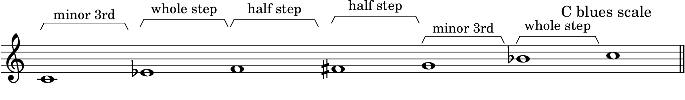
Blues Changes
Figure 10-2
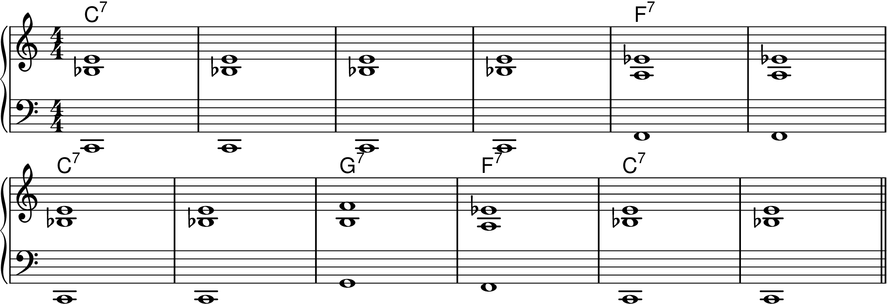
Figure 10-3
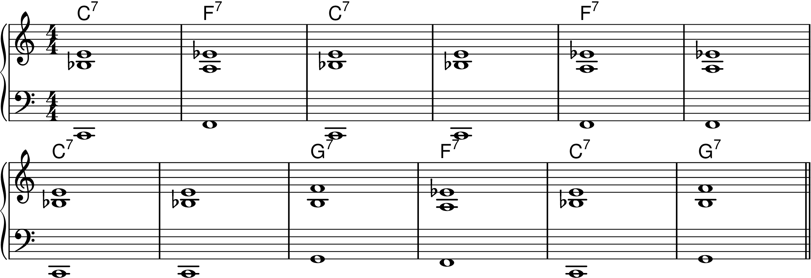
Figure 10-4
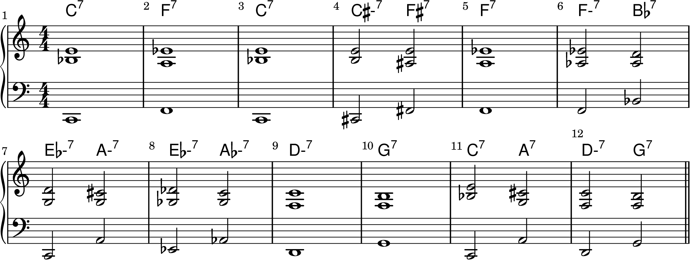
Special Kinds of Blues
Figure 10-5
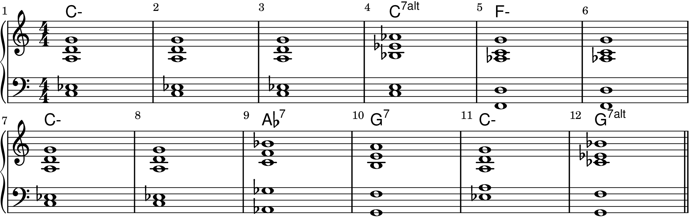
Figure 10-6
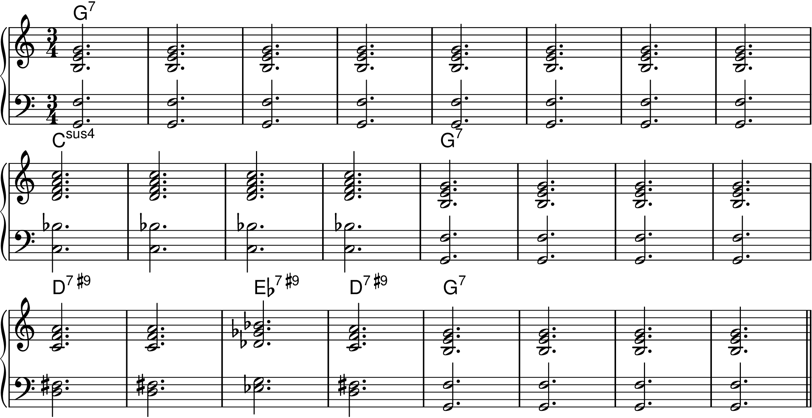
Figure 10-7
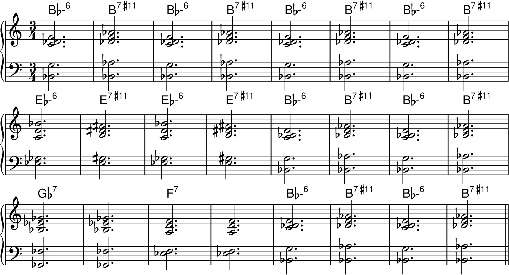
Figure 10-8
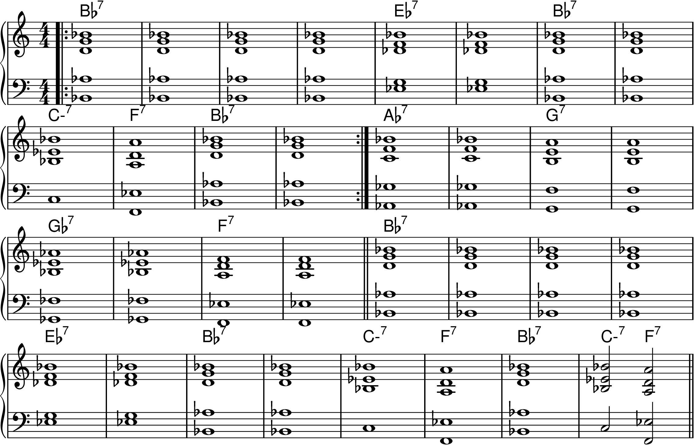
Figure 10-9
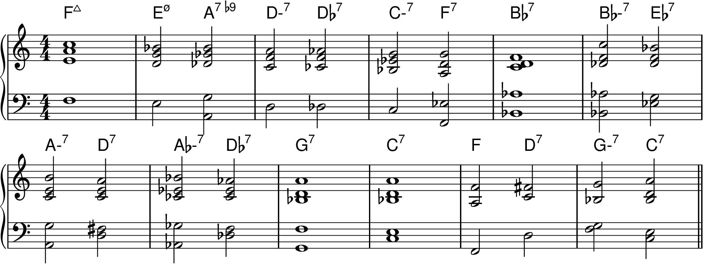
Figure 10-10
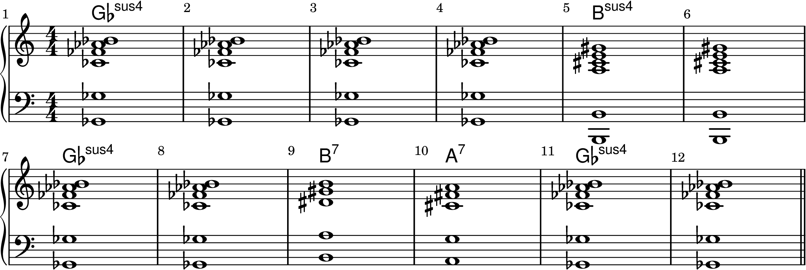
The Blues Scale
Figure 10-11
Figure 10-12
Figure 10-13
Figure 10-14
Figure 10-15
Figure 10-16
Figure 10-17
Figure 10-18

Figure 10-19
Figure 10-20
Figure 10-21
Figure 10-22
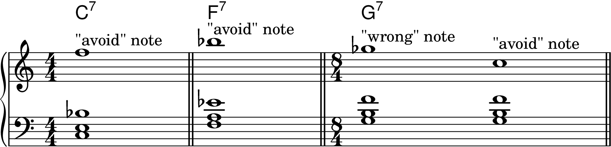
The Minor Pentatonic Scale
Figure 10-23

Figure 10-24
Figure 10-25